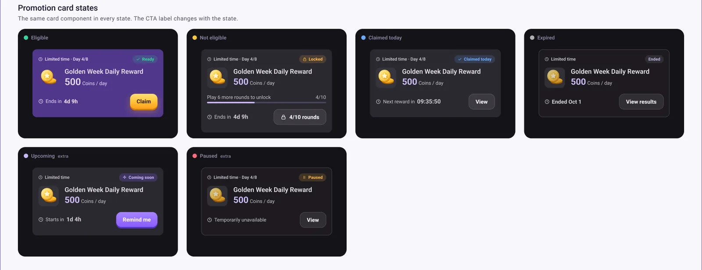
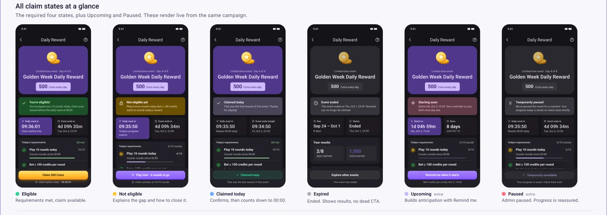
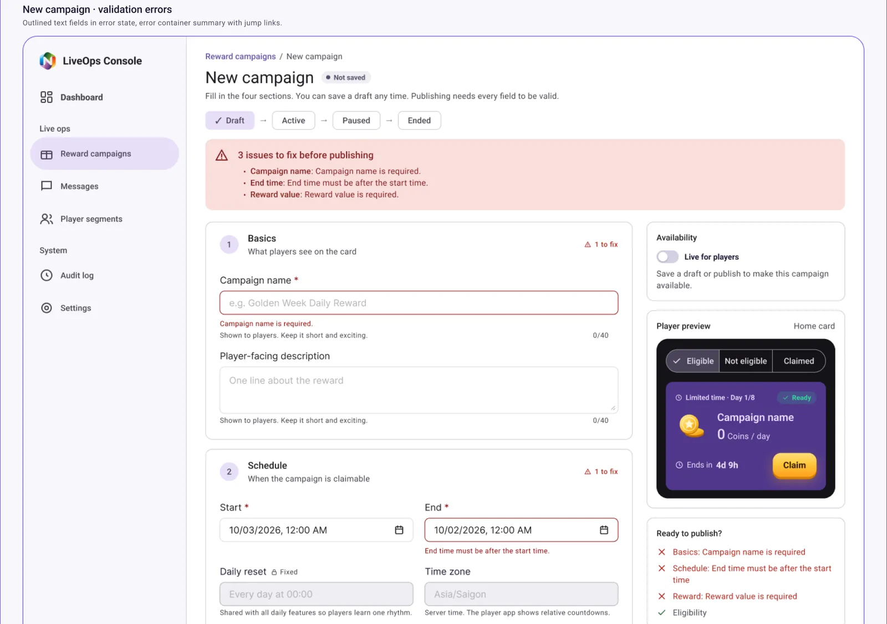
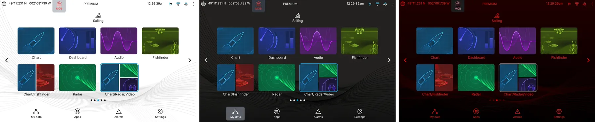

Design principles: what I check on every screen
Principles I have distilled from my own work and learning. Each one is tied to a real screen, so you can judge how I apply it.
The ten ideas I keep coming back to
- Users scan before they read.
- Clarity beats creativity.
- One screen equals one goal.
- Size creates hierarchy.
- Contrast creates attention.
- Whitespace improves comprehension.
- Alignment creates trust.
- Typography is a system.
- Color must have meaning.
- Great UI helps users achieve goals with minimum effort.
Six of them, in practice
Good UI is not decoration. It is communication: it helps users understand faster and reach their goals with less effort. These six examples come from the screens in my portfolio.
Users scan, they do not read
Show the state and the next step at a glance, so a screen answers "what is this, what can I do, what is the main action" without effort.
In practice: In the reward app the card always shows the time left, and its button changes with the state: Claim, a locked button with progress, View, Remind me.

One screen, one goal
Every screen has one main action, and when that action is not available the screen says why.
In practice: Each reward screen has one primary button. When it is disabled, the text under it explains the reason, for example that the claim unlocks at 10 of 10 rounds.

Color must have meaning, and never work alone
Each color has a job, and state is never shown by color only: color, icon and text work together.
In practice: In Smart Security, disarmed is a green unlocked icon on a white screen with the word Disarmed, and alarm is red with a striped background, an alarm icon and the word Alarm.

Forms must reduce friction
Break long forms into small steps, say what is wrong where it is wrong, and show the result as you type.
In practice: The campaign form is split into four sections, shows a live preview of the player card, lists problems in a summary at the top with jump links, and puts a message on each field.

Consistency beats creativity
Define it once, then use it everywhere. A design system is what lets a product scale.
In practice: Lighthouse keeps one layout and one set of components in light, dark and night modes. In the reward challenge, one Figma library with variants, variables and written usage rules serves the mobile app and the backoffice.

Design every state
A component is not finished until its states are. States decide what users see and what they can do.
In practice: A campaign moves through Draft, Active, Paused and Ended. Each state decides what can be edited and which actions are allowed, and guards scale with the consequence: pausing carries one warning, ending a campaign carries a stronger, double warning.

My checklist
The questions I ask before I call a screen finished.
Hierarchy
Is the primary action the most prominent?
Colors
Does each color have a meaning?
Accessibility
Can users with difficulties use it? Color is never the only signal.
Alignment
Are all elements aligned properly?
Consistency
Are components used consistently?
Spacing
Is there enough whitespace?
Typography
Is it easy to read?
Overall
Can users understand it in five seconds?